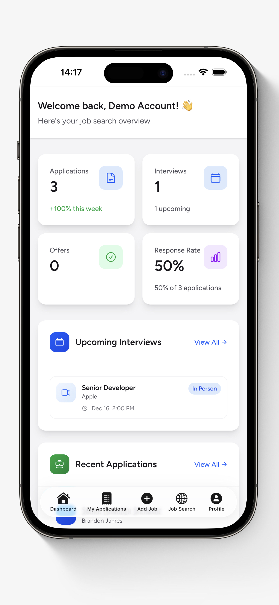
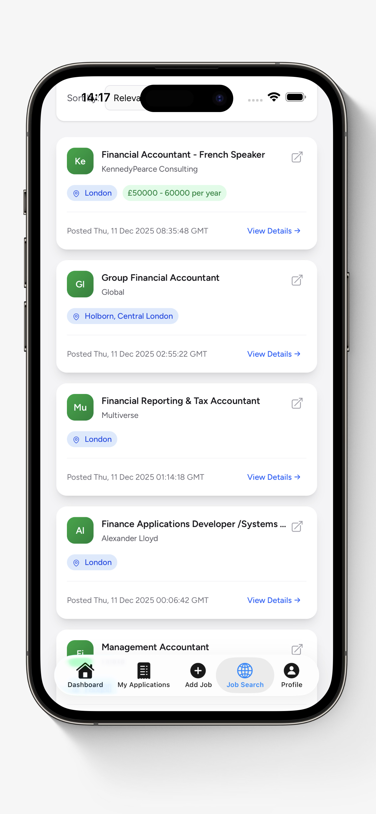
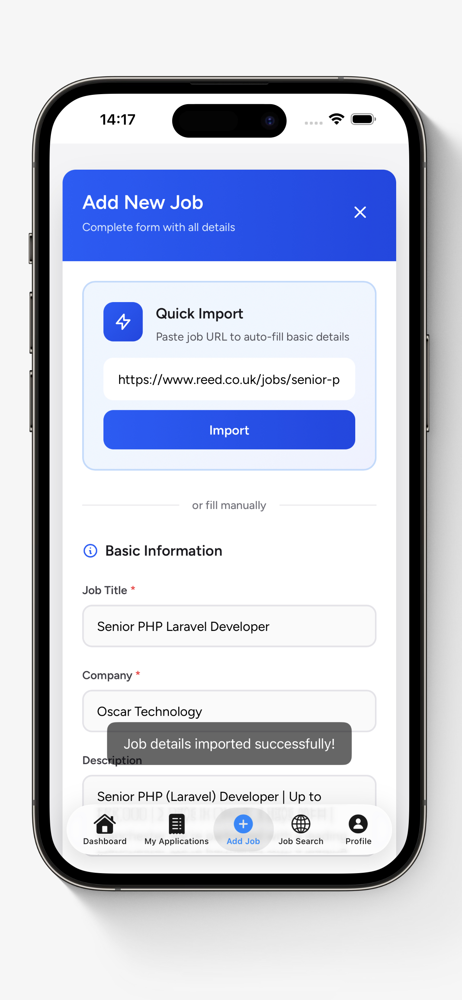
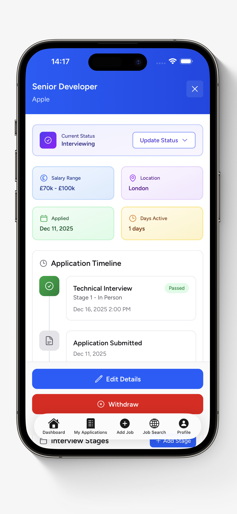

Your next job opportunity could pop up while you're on the bus, waiting for a coffee, or scrolling your phone before bed. And if you're not set up to act on it quickly, someone else will.
The good news? You don't need to be glued to a laptop to run an effective job search. With the right app on your phone, you can search for roles, save applications, track your progress, and prepare for interviews, all from your pocket.
Here's how to make your phone your most powerful job search tool.
Over 60% of job seekers now use their mobile phone as a primary tool for job searching, according to Standout CV. If you're not optimised for mobile, you're already behind.
Keep Your Dashboard in Your Pocket
The first thing you need when managing a job search from your phone is a clear overview. How many applications have you sent? How many interviews do you have coming up? What's your response rate looking like?
Instead of digging through emails and spreadsheets, a dedicated job tracking app like My Job Trackr puts all of that on a single dashboard. You can see your application stats, upcoming interviews, and recent activity the moment you open the app.

Having this at your fingertips means you always know where you stand. No more wondering "how many places have I actually applied to?" or "when was that interview again?" It's all right there.
Search for Jobs Wherever You Are
One of the biggest advantages of managing your job search on your phone is speed. New job postings go live constantly, and the earlier you apply, the better your chances. If you're only searching from your laptop at home, you're missing windows throughout the day.
With a mobile job search app, you can browse roles by keyword, location, contract type, salary range, and more. Spot something interesting during your lunch break? You can save it, review the details, and apply right away.

Being able to filter by specifics like minimum salary, full-time vs part-time, or permanent vs contract saves a lot of scrolling. You see only the roles that actually match what you're looking for.

Add Applications in Seconds
Here's where most people's systems break down. You find a great job, you apply, and then... you forget to log it anywhere. Two weeks later, you can't remember the company name, the role title, or whether you even applied.
The easiest way to fix this is to log every application the moment you submit it. With My Job Trackr's Quick Import, you just paste the job URL and it automatically pulls in the job title, company, and description for you. No manual typing required.

This takes about five seconds, and it means every application is tracked from day one. You'll have the full job description saved (handy for interview prep later, since postings often get taken down after they're filled).
Track Every Stage of the Process
A job application isn't just "applied" or "not applied." There's a whole journey: application submitted, first interview, second interview, technical assessment, offer, negotiation. Keeping track of where each application sits is essential when you're juggling multiple opportunities.
A good mobile job tracker lets you update your status as things progress, see an application timeline showing every milestone, and keep important details like salary range, location, and interview dates right alongside each role.

This becomes invaluable when you're in the middle of multiple processes. You can quickly pull up all the details about a role before walking into an interview, or compare two offers side-by-side when you're lucky enough to have options.
Set Reminders So Nothing Slips
One of the most common mistakes in a job search is forgetting to follow up. You apply, you wait, and the window for a follow-up email quietly closes. A well-timed follow-up 7 to 14 days after applying can genuinely make a difference, but only if you actually remember to send it.
Set deadline reminders for each application directly from your phone. Get a notification when it's time to follow up, when an interview is approaching, or when you need to prepare for an assessment. Your phone is already sending you notifications all day. Make some of them useful.
Job seekers who follow up after applying are significantly more likely to hear back. 44% of applicants cite a lack of response as their biggest frustration. (Huntr, 2026)
Tips for an Effective Mobile Job Search
Having the right app is half the battle. Here are a few habits that make mobile job searching even more effective:
- Check in daily. Spend 10 to 15 minutes each morning browsing new listings and updating your tracker. Little and often beats marathon sessions.
- Turn on job alerts. Set up notifications for your target roles so you hear about new postings as soon as they go live.
- Save job descriptions. Postings disappear once filled. Having the full description saved in your tracker means you can prep for interviews without guessing.
- Review weekly. Set aside time each week to review your application data. Which channels are working best? What's your interview conversion rate? Adjust your strategy based on what the numbers tell you.
- Keep your CV accessible. Store your latest CV in your phone's cloud storage so you can attach it to applications on the go.
Your Job Search, Anywhere
Managing your job search from your phone isn't about doing everything on a tiny screen. It's about staying on top of opportunities the moment they appear, logging applications before you forget, and keeping your entire search organised in one place, no matter where you are.
My Job Trackr is available on both iOS and Android, and it's free to get started. If you want extra features like advanced analytics and unlimited reminders, Pro plans start from just £2.99/month.
Download it, set up your dashboard, and start managing your job search from your phone today. The best time to apply is usually right now.
Take Your Job Search With You
Search, track, and manage your applications from anywhere. Download My Job Trackr for free.